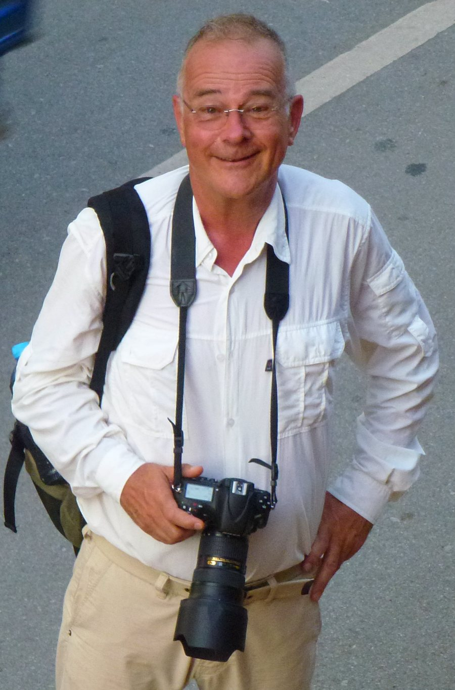

FILMS & TELEVISION

Five decades of documentary filmmaking across food, theatre, art, history, science, Africa and the countryside.
FOOD, LANDSCAPE & RURAL TRADITIONS
- A Taste of Britain — Eight pioneering films celebrating Britain’s regional foods and the people who produced them.
- Back to the Roots — Richard Mabey explores the history of people and plants in England in a series of 6 half-hours.
- Built in Britain — A journey through vernacular architecture in England and Wales in a series of 6 half-hours.
- The Lost Paradise — A film portrait of the landscape artist Roberto Burle Marx. VIEW
AFRICA
- Africa Express — Five current affairs films from Kenya, Tanzania and Burundi.
- African Footsteps — Celebrity journeys through Madagascar, Mozambique and Lesotho.
THEATRE & PERFORMANCE
- The South Bank Show — Producer and director of films on Harold Pinter, Tom Stoppard, John Osborne, Michael Frayn, Norman Mailer, R. K. Narayan, Ingmar Bergman and Roman Polanski.
- The Oresteia — Sir Peter Hall’s National Theatre production at Epidaurus.
- Royal Shakespeare Company — Three Sisters and As You Like It with Sir Ian McKellen.
- Alan Howard at the RSC — Henry V and Coriolanus.
- Nicholas Nickleby — The celebrated RSC production from rehearsal to opening night.
- Word of Mouth — Secrets in Shakespeare’s texts with John Barton and Trevor Nunn.
- The Passion — Bill Bryden’s National Theatre production.
- The Messiah — Starring Jim Broadbent and Patrick Barlow.
- Mighty Moments from World History — Four comedy dramas with the National Theatre of Brent.
- Letters Home — An experimental drama on Sylvia Plath.
- The A to Z of C&W — With Hank Wangford.
ARTISTS, WRITERS & POETS
- Andrew Wyeth — Portrait of the American realist painter. VIEW
- Raoul Dufy: Painter and Decorator — The French artist’s life and work.
- Royal Coal — The first television film on the popular painter.
- The Painting on the Wall — M. F. Husain and the women of Madhubani.
- Philip Larkin — A personal profile with the poems read by Larkin.
- Remains of Elmet — Ted Hughes and Fay Godwin.
- Arvon Poetry Competition — Ted Hughes, Philip Larkin, Seamus Heaney, Charles Causley and Andrew Motion.
- Looking Back at You, Salgado — Portrait of Sebastião Salgado. VIEW
SCIENCE, HISTORY & EXPLORATION
- The Inner Eye — Six documentaries on consciousness. With Sir Nicholas Humphrey.
- The Secret Life of Machines — Written and presented by Tim Hunkin.
- Fabric of an Age — A. J. P. Taylor on Manchester and the Industrial Revolution.
- In Search of the Sunken City — The search for the Pharos Lighthouse in Alexandria.
- The Deepest Hole in the World — A British caving expedition in the Pyrenees. VIEW
TELEVISION & BROADCASTING
- Forever Ealing — The centenary of Ealing Film Studios. VIEW
- Omnibus — Editor of five series of BBC1’s flagship arts programme.